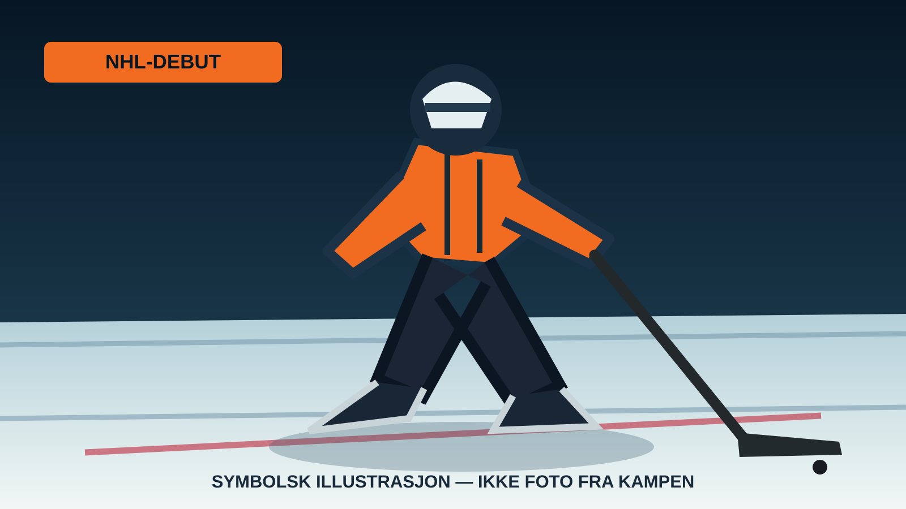

SPORT · ISHOCKEY
Stian Solberg fikk NHL-debuten – spilte over 18 minutter
Den norske backen fikk 18 minutter og 23 sekunder på isen da Anaheim Ducks tapte 0–4 for Colorado Avalanche. Solberg blokkerte fem skudd i sin første NHL-kamp.

Stian Solberg fikk sin første kamp i NHL natt til fredag norsk tid. Den norske backen startet for Anaheim Ducks borte mot Colorado Avalanche etter å ha blitt hentet opp fra farmerlaget San Diego Gulls. Kampen endte med tap 0–4, men for Solberg ble det samtidig en milepæl i karrieren.
Kilder: Anaheim Ducks – kamprapport, 20. november; Anaheim Ducks – hentet opp fra San Diego, 19. november.
Solberg fikk 18 minutter og 23 sekunder på isen. Han blokkerte fem skudd, flest på Anaheim-laget i denne kampen. For en 20-åring i sin debut var det betydelig spilletid, selv om lagets resultat ikke ga grunn til feiring.
Kilder: Hockey.com – debuten og spilletiden; The Sporting Tribune – kampstatistikk og debut.
Colorado hadde Scott Wedgewood i mål. Han reddet 25 skudd og holdt nullen, mens Brock Nelson scoret to av hjemmelagets fire mål. Resultatet satte dermed en klar ramme rundt kvelden, men sier lite alene om hva Solberg kan få til videre.
Solbergs NHL-debut – nøkkeltall
- Kamp: Colorado Avalanche – Anaheim Ducks 4–0.
- Spilletid: 18.23.
- Blokkerte skudd: fem.
- Dato: 19. november i Colorado, natt til 20. november i Norge.
Anaheim valgte Solberg som nummer 23 i første runde av NHL-draften i 2024. Klubben har latt ham utvikle seg i AHL, og oppturen til NHL-laget viser at han nå er aktuell for spill på øverste nivå. Det er foreløpig ikke klart hvor mye spilletid han vil få i de kommende kampene.
Kilde: Anaheim Ducks – spillerbakgrunn og draft, 19. november.
Solberg ble ifølge amerikansk sportsdekning den tolvte norskfødte spilleren som har fått prøve seg i NHL. Spørsmålet nå er ikke bare om han får flere kamper, men om han kan etablere seg over tid blant de beste.
Kilder og dokumentasjon
- Anaheim Ducks / NHL.com, 20. november 2026 – kampreferat
- Anaheim Ducks / NHL.com, 19. november 2026 – tilbakekalling til NHL
- Hockey.com, 20. november 2026 – Solbergs debut
- The Sporting Tribune, 20. november 2026 – 12. norskfødte NHL-spiller
- NHL Gamecenter – Anaheim mot Colorado, 19. november
Kampdata gjelder NHL-kampen 19. november lokal tid. Bildet er et symbolsk, foreløpig illustrasjonsutkast og viser ikke Stian Solberg eller den faktiske debuten.